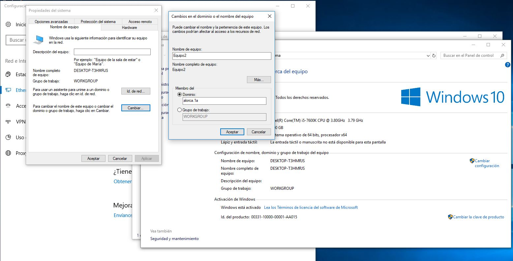

b.1) Equipos al dominio
Pasos previos a añadir un equipo
Al cliente le asignamos una IP fija que comprenda en el rango de IP del servidor, la misma máscara de red y de puerta de enlace predeterminada ponemos la dirección IP de nuestro dominio y de DNS primario ponemos la dirección IP del dominio.
Añadir equipos
Para añadir equipos al dominio nos dirigimos a Usuarios y equipos de Active Directory, crearemos una unidad organizativa para los usuarios del departamento administración, una vez creada dicha unidad, insertaremos los usuarios con sus respectivos equipos.
Una vez creado el usuario, nos dirigimos a este equipo, le damos click derecho en propiedades y luego le damos a cambiar configuración, nos aparecerá una pequeña ventana y ahí le damos a cambiar y nos aparece lo siguiente.
Le damos click a dominio e introducimos el nombre de nuestro dominio, luego de ponerlo le damos click a aceptar, nos aparecerá una nueva ventana, en el cual tenemos que poner Administrador y su contraseña. Si todo ha salido correctamente nos aparece lo siguiente se unió correctamente al dominio. Nos saldrá un error pero es normal, le damos a aceptar y nos pedirá luego que reiniciemos el equipo.
Nos vamos al servidor y al usuario que le creamos en el Active Directory, le asignamos el equipo que hemos añadido, para ver el equipo añadido nos vamos a Active Directory > dominio > computers, si todo ha salido correcto, debe aparecer el equipo que hemos añadido. Le asignamos el equipo añadido al usuario creado, una vez llegado ahí nos vamos a la unidad organizativa que hemos creado y le damos click derecho al usuario que le vamos a añadir el equipo, nos vamos a la sección cuenta y luego le damos a iniciar sesión en..., nos aparecerá una nueva ventana y ahí escribimos el nombre del equipo y lo agregamos, quedaría tal así.
Nos vamos al ordenador de cliente y para iniciar sesión le tenemos que dar a Otro usuario y ahí introducimos el username y password del dominio. Si todo es correcto nos debe de iniciar sesión sin problemas.